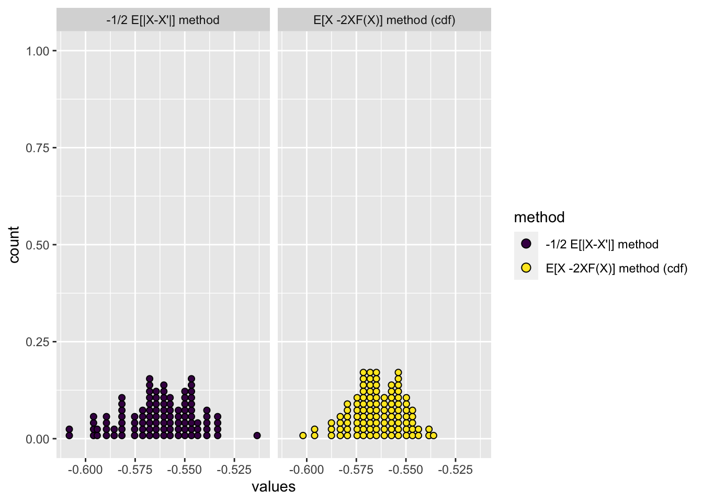

Wikipedia has two different methods of calculating the CRPS. I was interested to compare between the two. The first formula is the one we currently use in our simulations and is currently implemented in the LOO package (v2.8.0). The following definition is a mostly copied version of the Wikipedia page, included for convenience. Let \(X\) and \(X'\) be independent random variables, sampled from distribution D. For distributions with a finite first moment, the CRPS can be written as:
\[
CRPS(D,y) = \mathop{\mathbb{E}}[|X-y|]-\frac{1}{2}\mathop{\mathbb{E}}[|X-X'|]
\] The Wikipedia page notes that the cumulative probability function \(F\) is continuous, the CRPS can also be written as:
Aki points out that the difference between these equations is after the first term, which means we can conclude that when the CDF is continuous the following is true. \[
-\frac{1}{2}\mathop{\mathbb{E}}[X - X'] = \mathop{\mathbb{E}}[X -2XF(X)]
\]
I was interested in comparing the difference between the two for a normal distribution and for two distributions with discrete support.
X Normally distributed
I simulated a sample of \(1000\) from a \(N(10,1)\) distribution and calculated just the \(\mathop{\mathbb{E}}[X - X']\) and \(\mathop{\mathbb{E}}[X] -2\mathop{\mathbb{E}}[YF(Y)]\) components of the equation. I repeated this \(100\) times and plotted this histogram of scores across iterations (so each dot represents a score on an iteration). I’m interested in how close the two methods are for discrete distributions.
#rm(list = ls()), see https://www.tidyverse.org/blog/2017/12/workflow-vs-script/set.seed(27473)x_prime_method =rep(NA, 100)x_cdf_method =rep(NA, 100)number_samples =1000for (i in1:100) { X =rnorm(number_samples, 10, 1) X_prime = X[sample.int(number_samples)] x_prime_method[i] =-.5*mean(abs(X_prime - X)) x_cdf_method[i] =mean(X -2* X * posterior::u_scale(X))}data.frame(values =c(x_prime_method, x_cdf_method),method =rep(c("-1/2 E[|X-X'|] method", "E[X -2XF(X)] method (cdf)" ), each =100)) %>%ggplot(., aes(x = values, fill = method)) +geom_dotplot() +facet_grid(. ~ method) +scale_fill_viridis_d()

One thing that’s really interesting to note is the difference between using the u_scale function from the posterior package or the pnorm function from base R. Here we plot one against the other for the last simulation iteration, but if we were to use the pnorm function in the simulation above, it appears much more noisy. When we compare the two, they do seem similar.
To answer this I simulated a sample of \(1000\) from a \(\text{Pois}(\lambda)\) distribution, with $ = 5$ and \(\lambda = 50\). Again I calculated both cdf and x-prime components and compared the two. Not only does the cdf method prove to be more variable over iteration, it also seemed to centre on a different value.
If we were to use the ppois function instead of the u_scale function from the posterior package then the distribution of scores is too low. Here we plot one against the other for the last simulation iteration.
Of course I am particularly interested in the behaviour with binomial distributions, so I simulated a sample of \(1000\) from a \(\text{Binomial}(n,p)\) distribution, with \(p = 0.5\), and \(n = 5\); \(n = 50\). but the findings seem similar the that of the Poisson. The code is very similar across experiments, but I don’t think there could be an error. The only difference is the r* and p* functions.
If we were to use the ppois function instead of the u_scale function from the posterior package then the distribution of scores is too low. Here we plot one against the other for the last simulation iteration and see a worse pattern where the pbinom is consistently below the u_scale form.